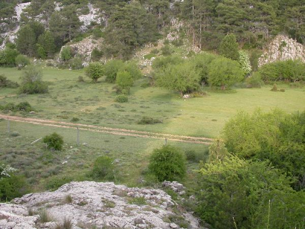
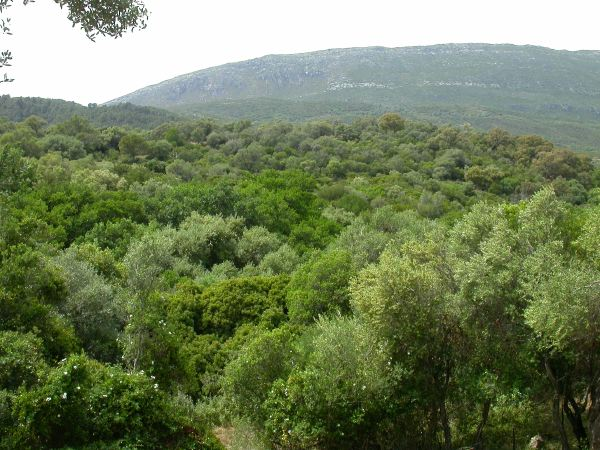
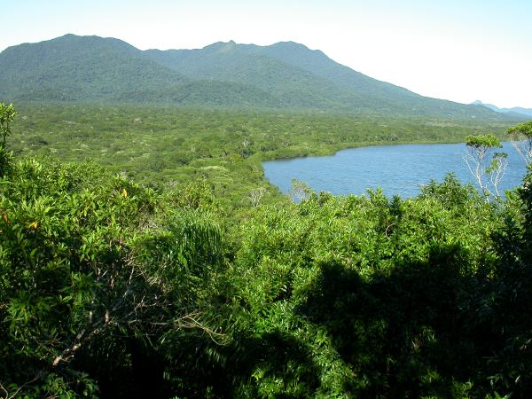

 Nava de las Correhuelas, Parque Natural de las Sierras de Cazorla, Segura y Las Villas, Jaén, Spain. 1615 m. |
 Guadahornillos valley, Parque Natural de las Sierras de Cazorla, Segura y Las Villas, Jaén, Spain. 1220 m. |
 Sierra de Aljibe, Parque Natural de Los Alcornocales, Cádiz, Spain. 700 m. |
 Parque estadual Ilha do Cardoso, São Paulo, Brazil. Field site for the Frugivory and Seed Dispersal Course. |
 Pantanal field sites, Mato Grosso do Sul, Brasil. |
 Juniper scrubland, Parque Nacional de Doñana, Huelva, Spain. 10 m. |
These are photo galleries
of our main field study sites in Southern Spanish habitats and Brazil. Click
on photo to expand the gallery.